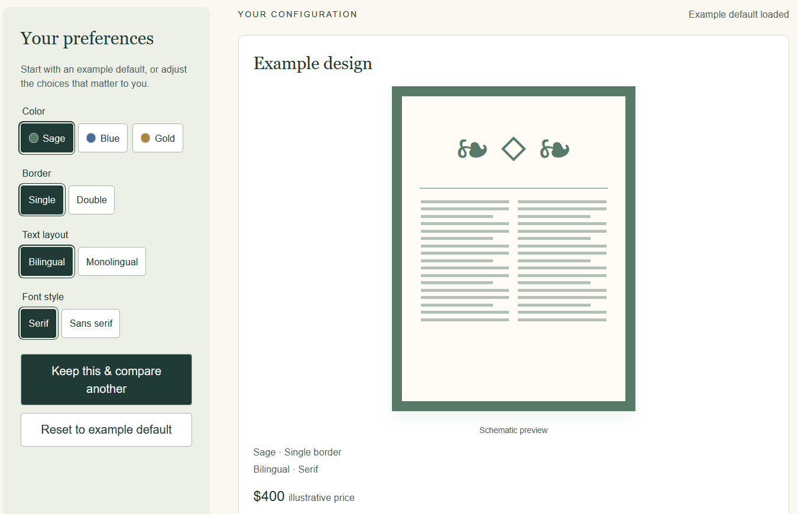
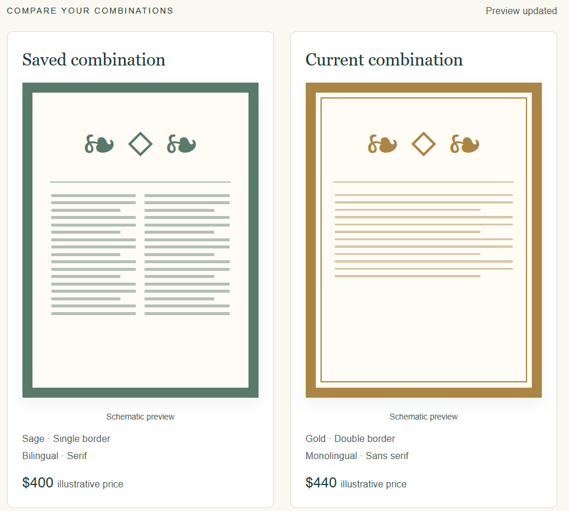

A ketubah (plural: ketubot) is a Jewish marriage contract with a tradition of artistic decoration. Its wording and language can vary across communities (Jewish Museum Berlin, n.d.).
Choosing a ketubah therefore brings together artwork and text. At Dankowicz.com, artist Melanie Dankowicz's online shop for ketubot and other Judaica, shoppers can request changes to colors, fonts, and design details, with a text proof reviewed before completion (Dankowicz, n.d.-d). This proposal addresses how those choices are presented and explored. The shop runs on BigCommerce, an ecommerce platform that provides catalog, product-option, and ordering features.
01 / The problem & the opportunity
Make the choices clearer. Help shoppers find their match.
The problem: a fragmented browsing experience
On Dankowicz.com, a design family can appear as several color- and shape-specific products. Those individual pages can then offer other variations through option menus. For example, the page titled “Dragon Ketubah in Blue with Gold” also offers other color combinations (Dankowicz, n.d.-b). The mismatch is more explicit on the page titled “Garden Ketubah in Sea Blue”: during my review, Sea Blue was not explicitly listed among the color choices (Dankowicz, n.d.-c). This creates a browsing problem: is a listing a distinct design, a specific configuration, or an example of a design that can be customized?
The catalog also places variations from the same family among unrelated designs, making them harder to compare (Dankowicz, n.d.-e).
A menu groups products by design family, and individual product pages offer choices that update the price. Some personalization, such as adding initials to a tree, is ordered as a separate item; a worksheet and communication with the artist handle further choices (Dankowicz, n.d.-a, n.d.-d).
During my own visit as a simulated shopper, I tried to find the designs I liked most and eventually stopped. I found roughly 15 subgroup choices in the navigation menu, rather than design-family groups presented in the main catalog. Exploring those subgroups or opening numerous tabs felt like more work than I wanted to invest.
Example sequence from the catalog
Blooming Tree / Opal
Meadow / Sage
Modern Vine / Opal
Flowery Lace / Gold
Blooming Tree / Blue
The two Blooming Tree variations are separated by other designs.
The opportunity: begin with the shopper's preferences
In an informal research conversation, MBD, the owner of Dankowicz.com, described an opportunity beyond improving the current interface: buyers tend to have specific preferences, and the website could do more to help them find a choice that fits those preferences.
MBD explained that additional choices, including bordering, font, and whether the text is monolingual or bilingual, do not appear on the product pages. Shoppers specify these manually on a worksheet when ready to order. The language or language combination also affects font size. Options such as color are already included on product pages. The proposed tool could bring these choices together earlier, helping shoppers explore how artwork and text options combine before completing the worksheet.
In my review, even options already offered on product pages, such as color, were not consistently illustrated with equivalent examples. Without comparable views of the same design in different colors, it was difficult to assess what changing the color would look like. The proposed previews would address both gaps: making additional choices visible and illustrating supported changes consistently.
Improving individual product pages would not, by itself, give shoppers a way to explore the collection by their preferences. A unified tool could let them begin with what they already know, such as a preferred material, size, or color, and explore compatible designs and variations together. Those preferences could remain in place as they browse, preview, and compare.
The opportunity is to give shoppers a more direct way to find a combination they like within the artist's range. Clearer navigation supports that goal, but preference-led exploration is the additional capability the proposal aims to unlock.
Dankowicz.com was selected because of this opportunity and because I know the owner and wanted the assignment to produce something useful for the business and its shoppers. I have a family connection to the business and am also a potential shopper.
02 / Audience & research
Support the shopper already on the site.
In an informal research conversation, RAB, a prospective shopper recently engaged to be married, described starting with Google Images, asking friends what they chose, viewing their ketubot, and looking up recommended vendors online. This suggests a journey from images and recommendations to exploring a vendor's own collection.
The intended audience includes two groups of shoppers visiting Dankowicz.com: those who want to explore available combinations, and those who would prefer a suitable starting configuration and fewer initial decisions. MBD's account of buyers' specific preferences informs the first group; the second is a proposed audience whose needs remain to be tested.
The current experience does not necessarily meet these different needs. Shoppers who want to explore cannot consistently see equivalent examples of existing choices, and some options are deferred to the ordering worksheet. Shoppers who prefer fewer decisions can use design-family navigation, but still face a choice among sub-designs rather than being offered a starting configuration.
Variety is valuable, but comparison takes effort
A wider assortment can increase the chance of finding a preferred option and let shoppers retain flexibility within a vendor's offerings. At the same time, larger assortments can raise expectations of an ideal match and make decisions more demanding (Chernev et al., 2015). This tension helps explain the proposal: preserve the artist's variety while making it easier to understand and compare.
Interactive tools can help shoppers narrow the available options and compare selected alternatives in depth, potentially improving decision quality while reducing effort (Häubl & Trifts, 2000). The proposed tool would support both stages through flexible browsing and side-by-side comparison.
Start with a useful configuration
Customization research also identifies a balance between the value of a tailored product and the complexity of configuring it. A default configuration close to a shopper's preferences can reduce the comparisons needed during customization (Dellaert & Stremersch, 2005). An artist can use previous sales records to choose suitable starting combinations. Retaining selected settings would then avoid repeated choices as shoppers explore designs.
Engagement and shared decisions
Visitors could browse at their own pace, see how combinations look, compare prices, and return without creating an account. Baymard recommends making saving available to guest users (Scott, 2026). Each combination of selected options would have its own link. Shoppers could bookmark that link to reopen the same selection later, or use a copy-link button to share it with a partner or family member.
In an informal conversation about wedding decisions generally, MBD described back-and-forth among couples and family members. A shareable link that reopens the same selection could help them discuss the options together.
03 / Existing alternatives
What other ketubah sites do.
Dankowicz.com was the second result encountered in my Google search for a custom ketubah (Google, n.d.). This section compares the other four sites among the first five results and how they help shoppers browse designs and explore customization options.
On the pages I reviewed, I did not find a workspace where shoppers could preview the effects of their choices, nor did I find systems to retain shopper preferences across designs.
Similar storefronts, different ways of organizing the choices.
Three of these four alternatives use a familiar retail structure: browse a catalog, open a product page, select options, and see a price. Those options do not always describe the full extent of customization available from the artist (Ketubahome, n.d.; Ketubah.com, n.d.-c; Tallulah Ketubahs, n.d.). Miriam Karp's site takes a different approach, presenting previous artworks in nested galleries and directing visitors toward contact (Karp, n.d.).
The following accounts introduce each business, explain how its website is organized, and describe the differences observed while shopping. Platform information helps describe the setting; it does not establish why an owner made a particular design decision.
KetubahomeA Shopify storefront with product pages and convenient quick views.
Ketubahome is an online shop selling ketubah artwork, with both a product collection and a route for custom ketubah requests. It runs on Shopify, an ecommerce platform. Its collection displays individual ketubot that shoppers can open on separate product pages. A quick-view feature also lets shoppers inspect options and see prices without leaving the collection. During the review, this made comparing the cost of different options convenient (Ketubahome, n.d.).
In my review, Ketubahome used buttons for size selection. This follows Baymard's recommendation to use buttons for size selection (Scott, 2026). The tested choices included size and gold leaf. Changing the gold-leaf choice did not change the displayed image, and the tested selectors did not include language or custom text. The overall experience therefore makes some configuration choices available inside a standard retail flow, while leaving the shopper to understand other customization possibilities separately (Ketubahome, n.d.).
Ketubah.comA multi-artist catalog with prominent filters and a separate text collection.
Ketubah.com is an online retailer selling ketubot by multiple artists. Unlike a shop centered on one artist's collection, it brings many artists and styles into the same catalog. Shoppers can narrow that catalog using prominent theme, color, price, artist, and category filters, then open an individual design to choose its options (Ketubah.com, n.d.-c).
Product selection still follows the catalog-to-product-page pattern. In the Forest example, shoppers could choose print stock and size and see the price change, but the preview did not change during testing. The site also provides a substantial text-selection section. Links connect artwork and text, although the relationship between the two parts of the process felt unclear during the review (Ketubah.com, n.d.-a). In another product-page example, Lace Papercut Ketubah, I observed option menus rather than buttons (Ketubah.com, n.d.-b). This contrasts with Ketubahome's visible size buttons; Baymard's recommendation specifically concerns size selection (Scott, 2026). Its commerce platform has not been established in this study.
Tallulah KetubahsA studio storefront combining artwork with material and framing choices.
Tallulah Ketubahs is a studio's online shop selling ketubah artwork, including prints and hand-painted work. Its catalog also includes guest-artist designs. Shoppers browse the collection, open a product page for a design, and choose among the options offered for that work (Tallulah Ketubahs, n.d.).
The Pomegranate Tree Canopy example offered material, size, and frame/presentation choices. Selecting them changed the price but did not update the preview images during testing. Text options are also offered through linked information. The reviewed pages include Shopify-hosted links, but the platform has not been independently confirmed from the live storefront source in this study (Tallulah Ketubahs, n.d.).
Miriam KarpThe simplest site makes the relationships between artworks especially clear.
CustomKetubah.com presents the work of artist Miriam Karp, who creates custom and print ketubot as well as other artwork. The website credits OtherPeoplesPixels as its provider. It is organized as an artist portfolio rather than a conventional online shop: visitors browse images, open a sub-gallery or design family, and then reach an individual artwork. Some print entries show prices; custom artworks show information such as media and dimensions. The reviewed journey leads toward contacting the artist rather than using an Add to Cart flow (Karp, n.d.).
The Olive Tree Circle section groups variations within one design family (Karp, n.d.). Its structure makes the relationship explicit: design family → variations → individual artwork. That clarity stood out alongside the retail sites' mixture of separate listings and within-page options. It provides a useful organizational reference even though it does not provide their integrated retail controls.
04 / Proposal & five capability areas
One browsing experience. Several ways to begin.
The proposed product is a unified browsing and configuration applet, potentially implemented as a BigCommerce widget. It would bring designs, backing and framing options, materials, text choices, previews, and pricing into a connected experience.
The central difference is continuity across designs. A shopper who already knows the desired material or size could retain those preferences while exploring compatible artwork. Someone starting with an image could instead choose a design family and compare its variations.
A grouped gallery and an optional configuration workspace would provide both routes. Shoppers would have access to the range without needing to confront every variation at once.
Explore the range, or begin with a default
The proposal would offer an artist-selected default configuration as a starting point, with the option to adjust only the choices that matter to the shopper. Those who want to explore could open the broader configuration workspace to preview and compare supported combinations. Neither route would require shoppers to make every available choice before beginning. Whether these routes meet the two groups' needs would be evaluated with shoppers.

Concept mockup: begin with a default configuration and adjust selected preferences. Schematic artwork, settings, and price are illustrative. Mockup developed with OpenAI Codex assistance (OpenAI, 2026).

Concept mockup: compare selected configurations side by side. Schematic artwork, settings, and prices are illustrative. Mockup developed with OpenAI Codex assistance (OpenAI, 2026).
A connected path from browsing to selection.
01
Flexible browsing & selection
Organize design families and variations clearly, with filters for available attributes such as material and size. Retain known preferences as shoppers move among compatible designs. Options would be tailored to the artist's products, with unsupported combinations identified clearly.
This addresses the catalog organization and repeated selection work identified in the review. Design-first screening remains an option rather than a required sequence. The distinction between screening alternatives and evaluating a shortlist informs the approach (Häubl & Trifts, 2000).
On the Dankowicz.com pages I reviewed, option choices used menus. The proposed interface would expose short option lists as buttons, including size choices where offered, rather than requiring a menu to be opened. Baymard recommends buttons specifically for size selection (Scott, 2026). I also observed buttons rather than menus for option selection on the cited Amazon and EyeBuyDirect pages (Calvin Klein Mens Dress Shirts, n.d.; 1.5ct Engagement Ring, n.d.; EyeBuyDirect, n.d.).
02
Comprehensive visual previews
Show how supported choices affect appearance, using artist-approved images or layers for relevant color, backing, material, framing, bordering, font, and language options, including how language combinations affect font size. A browsing preview would remain separate from the final text proof.
The proposed content would pair design imagery with material close-ups, size references, prices, and concise explanations of text choices. Consistent views would help shoppers compare the same attributes across alternatives; labels would explain differences that an image alone cannot show.
MBD, the owner of Dankowicz.com, expressed interest in this capability during the informal research conversation. Tested Amazon clothing and jewelry pages and EyeBuyDirect's Belleville page provide examples of product/model photos responding to selections (Calvin Klein Mens Dress Shirts, n.d.; 1.5ct Engagement Ring, n.d.; EyeBuyDirect, n.d.).
03
Integrated price understanding
Keep the price of the current combination visible within the browsing flow and identify custom requests that require a quote. This builds on the dynamic pricing already present in the reviewed sites.
In the informal research conversation, MBD identified understanding pricing as a benefit of the proposed system. The ordering guide confirms that some artwork changes require pricing discussion (Dankowicz, n.d.-d).
04
Side-by-side comparison
Place selected configurations alongside each other to compare appearance, options, and price. Shoppers could assess alternatives without reconstructing each combination from memory.
This responds to the author's difficulty comparing options. In a simulated online-store study, a comparison matrix improved some aspects of decision quality, providing a rationale for this capability (Häubl & Trifts, 2000).
05
Remember, bookmark & share
Automatically remember the last settings in the same browser. A configuration-specific URL could be bookmarked or copied into email or text so a partner or family member can view the same combination. No account or email-sending service would be required.
In the Amazon and EyeBuyDirect examples I reviewed, URLs already retained some selections, such as color, but not necessarily every selected option (Calvin Klein Mens Dress Shirts, n.d.; 1.5ct Engagement Ring, n.d.; EyeBuyDirect, n.d.). The proposed links would reopen the supported configuration, rather than only some of its attributes.
Baymard recommends allowing guests to save products without registering (Scott, 2026). The proposed configuration links extend that idea to returning and sharing. Private names and custom text would stay out of the URL.
05 / Implementation options
Implementation options
Existing customization tools include Customily, Doogma, Kickflip, and Zakeke (Customily, n.d.; Doogma, 2024; Kickflip, n.d.; Zakeke, n.d.). An existing tool could be adapted, or a custom solution developed. The implementation choice remains open; the proposal focuses on the shopping journey and the capabilities it should support.
One possible explanation for the limitations observed is that a standard storefront setup may not readily provide a browsing and preview experience tailored to an artist's particular products. Creating that experience could require custom development beyond the setup the retailer would otherwise undertake. The proposed tool would provide that custom experience without requiring the retailer to design and code it themselves.
06 / Future research
Test how shoppers use the choices.
A next step would be to ask ketubah shoppers to try the proposed browsing, preview, comparison, and sharing features. This would help clarify which options they want to retain across designs, how they compare combinations, and whether shared links help them discuss their choices.
A tool that makes more combinations visible could also raise expectations of finding a perfect match or prolong the search (Chernev et al., 2015). Testing could explore whether grouped browsing, a useful starting configuration, and a manageable comparison set help shoppers find a choice without extending the search unnecessarily. The published research provides a basis for these design decisions; their effect on ketubah shopping remains to be evaluated.